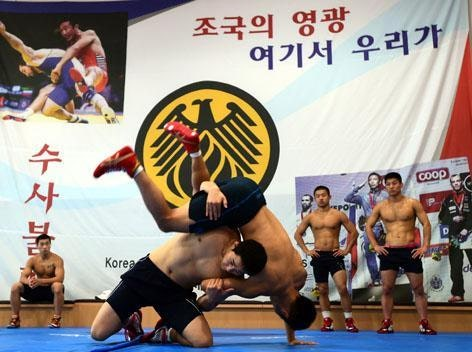

국가 대표급의 실력을 지닌 선수들이 항상 하는 말이 언제나 군복무로 인해 경력 단절을 우려한다 이다.
하지만 그건 비단 체육계의 문제만은 아니고 모든 청년에 해당하는 말이다.
게다가 체육계는 다른 분야에서 전혀 받지 못하는 특혜를 이미 받고 있다.

육군 체육 부대 - 상무
상무 하면 우리는 항상 김천 FC만 떠올리지만 실상 상무에서 운영하는 종목은 꽤나 많다.
- 제1경기대 14종목: 양궁, 역도, 사이클, 체조, 펜싱, 유도, 복싱, 레슬링, 수영, 육상, 바이애슬론, 태권도, 사격, 근대5종
- 제2경기대 11종목: 남자축구, 여자축구, 배드민턴, 배구, 하키, 핸드볼, 농구, 탁구, 테니스, 럭비, 야구
현재 운영하고 있는 종목은 25개나 되며 생각보다 많은 종목의 선수들이 상무에서 복무중이다.
일선의 사람들은 저런 특기를 살린 보직을 갈 기회가 극히 드물지만 아시안 게임이나 올림픽대표의 경우 분명히 상무에서 근무하는 것도 혜택인데 어째서 병역특례라는 택까지 추가로 얹어주는지 이해가 안된다.
어.. 안톤오노?ㅋㅋㅋㅋㅋㅋㅋ